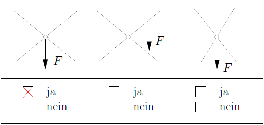

Technische Mechanik I
Übungsblatt 1
Aufgabe 1.1
Eine gegebene Kraft \( \vec F \) ist eindeutig in Einzelkräfte zu zerlegen, deren Wirkungslinien gegeben sind. In folgenden Fällen 1 und 3 ist eine solche Zerlegung möglich.
Da die Wirkungslinien der Kräfte sich in einem Punkt schneiden, kann \( \vec F \) eindeutig in Einzelkräfte zerlegt werden.Aufgabe 1.2